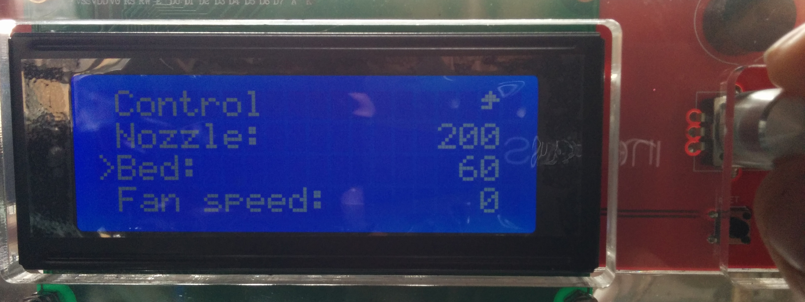

# 3D Printer Control
# with
# Python
### James Stewart
### PyCon Australia 2016

## sparkcc.org
# Overview
|
## 3D Printing Process Control Limitations |
## OpenGB Goals Architecture Python! |
## Future Development Other Applications |
# How a 3D Printer Works
### Solid Plastic
### **⇓**
### Liquid Plastic
### **⇓**
### Solid Plastic
# How a 3D Printer Works
## Heaters ⇐
## Temp Sensors ⇒
## Stepper Motors ⇐
## Limit Switches ⇒

Microcontroller
# How a 3D Printer is Controlled
## Dot-Matrix LCD ⇐
## Jog Dial ⇒
## SD Card ⇒
Microcontroller
# How a 3D Printer is Controlled
# GCode
G1 X93.087 Y79.875 E17.81040
G1 X105.300 Y79.874 E18.23090
G1 X105.826 Y79.870 E18.24901
G1 X106.156 Y79.869 E18.26038
G1 X106.156 Y79.200 E18.28341
G1 X119.456 Y79.200 E18.74134
G0 F10200 X119.056 Y79.600
G1 F600 X119.056 Y118.600 E20.08412
G1 X118.656 Y118.600 E20.09790
G1 X118.656 Y120.200 E20.15299
G1 X106.556 Y120.200 E20.56959
G1 X106.556 Y119.731 E20.58574
G1 X106.513 Y119.732 E20.58722
G1 X106.421 Y119.731 E20.59039
G1 X105.839 Y119.732 E20.61043
G1 X93.700 Y119.731 E21.02838
# Limitations
## Cumbersome input
## Limited output
## Physical file transfer
## Local control
# OpenGB Goals
|
## Interface Approachable Feature-rich |
## Network Gcode uploads Remote control Remote monitoring |
## Codebase FOSS API Documentation Easy deploy |
# Printer Control Revisited
## Dot-Matrix LCD ⇐
## Jog Dial ⇒
## SD Card ⇒
## Serial ⇔
Microcontroller
# Printer Control Extended

Single-board Computer
Microcontroller
# OpenGB Architecture
### Python
### Network ⇔ Printer
# Printer Process
### Printer interface
### Separate process
### Serial connection
### GCode abstraction
### Multi-printer
## Printer ABC
class IPrinter(multiprocessing.Process):
__metaclass__ = abc.ABCMeta
@abc.abstractmethod
def set_temp(self, bed=None, nozzle1=None, nozzle2=None):
"""
Set printer target temperatures.
:param bed: Bed target temperature
:type bed: :class:`float`
:param bed: Nozzle 1 target temperature
:type bed: :class:`float`
:param bed: Nozzle 2 target temperature
:type bed: :class:`float`
"""
pass
## Marlin Concrete Class
class Marlin(IPrinter):
def set_temp(self, bed=None, nozzle1=None, nozzle2=None):
if bed != None:
self._queue_command(b'M140 S' + str(bed).encode())
if nozzle1 != None:
self._queue_command(b'T0')
self._queue_command(b'M104 S' + str(nozzle1).encode())
if nozzle2 != None:
self._queue_command(b'T1')
self._queue_command(b'M104 S' + str(nozzle2).encode())
## Dummy Concrete Class
class Dummy(IPrinter):
def set_temp(self, bed=None, nozzle1=None, nozzle2=None):
if bed:
self._callbacks.log(logging.DEBUG,
'Setting bed temp: {0}'.format(bed))
self._temp_target_bed = bed
if nozzle1:
self._callbacks.log(logging.DEBUG,
'Setting nozzle1 temp: {0}'.format(nozzle1))
self._temp_target_nozzle1 = nozzle1
if nozzle2:
self._callbacks.log(logging.DEBUG,
'Setting nozzle2 temp: {0}'.format(nozzle2))
self._temp_target_nozzle2 = nozzle2
## Printer Queue
def _process_message_to_printer(self, message):
"""
{
'method': 'set_temp',
'params': {
'base': 110
'nozzle1': 210
'nozzle2': 210
}
}
"""
if 'method' and 'params' in message.keys():
getattr(self, message['method'])(**message['params'])
else:
raise KeyError('Message does not contain `method` and `params`')
## Printer Callbacks
class PrinterCallbacks(object):
def temp_update(self, bed_current, bed_target, nozzle1_current,
nozzle1_target, nozzle2_current, nozzle2_target):
class QueuedPrinterCallbacks(PrinterCallbacks):
def __init__(self, from_printer):
self._from_printer = from_printer
def _publish(self, event):
self._from_printer.put(event)
def temp_update(self, bed_current, bed_target, nozzle1_current,
nozzle1_target, nozzle2_current, nozzle2_target):
self._publish({
'event': 'temp_update',
'params': {
'bed_current': bed_current,
...
}
})
## Using Printer Callbacks
# Initialize printer queues.
to_printer = multiprocessing.Queue()
from_printer = multiprocessing.Queue()
# Initialize printer using queue callbacks.
printer_callbacks = opengb.printer.QueuedPrinterCallbacks(from_printer)
printer_type = getattr(opengb.printer, options.printer)
printer = printer_type(to_printer, printer_callbacks,
baud_rate=options.baud_rate,
port=options.serial_port,
lcd_gpio_pin=options.lcd_gpio_pin)
# Server Process

## Websocket API
## Database
## Filesystem
# Tornado
## Self-contained
## Asynchronous
## Event loop
# Periodic Callbacks
# Create event loop and periodic callbacks
main_loop = tornado.ioloop.IOLoop.instance()
printer_event_processor = tornado.ioloop.PeriodicCallback(
lambda: process_printer_events(from_printer), 10)
counter_updater = tornado.ioloop.PeriodicCallback(
lambda: update_counters(), 60000)
# Rock and roll.
printer_event_processor.start()
counter_updater.start()
main_loop.start()
# Websockets
# Backend handler is always required.
handlers = [(r"/ws", WebSocketHandler, {"to_printer": to_printer})]
# Frontend-specfic handlers added if required.
try:
handlers += get_frontend_handlers(options.frontend)
except IOError as e:
LOGGER.exception(e)
LOGGER.warn('No frontend will be served.')
app = Application(handlers=handlers, debug=options.debug)
httpServer = tornado.httpserver.HTTPServer(app)
httpServer.listen(options.http_port)
# WebSocketHandler
class WebSocketHandler(tornado.websocket.WebSocketHandler):
def open(self):
LOGGER.info('New connection from {0}'.format(
self.request.remote_ip))
CLIENTS.append(self)
def on_close(self):
LOGGER.info('Connection closed to {0}'.format(
self.request.remote_ip))
CLIENTS.remove(self)
def on_message(self, message):
# Process message
# Generate response if required
self.write_message(response.json)
# JSON-RPC 2.0
### jsonrpc.org
# JSON-RPC 2.0
## Request
{
"jsonrpc": "2.0",
"id": 1,
"method": "set_temp",
"params": {
"bed": 105,
"nozzle1": 206,
"nozzle2": 203
}
}
# JSON-RPC 2.0
## Response
{
"jsonrpc": "2.0",
"id": 1,
"result": true
}
# JSON-RPC 2.0
## Event
{
"jsonrpc": "2.0",
"event": "temp_update",
"params": {
"bed_current": 203,
"bed_target": 105,
"nozzle2_target": 203,
"nozzle1_current": 104,
"nozzle2_current": 108,
"nozzle1_target": 206
}
}
# Tornado + JSON-RPC
from jsonrpc import JSONRPCResponseManager, Dispatcher
# MessageHandler
class MessageHandler(object):
def __init__(self, to_printer):
self._to_printer = to_printer
def set_temp(self, bed=None, nozzle1=None, nozzle2=None):
self._to_printer.put({
'method': 'set_temp',
'params': {
'bed': bed,
'nozzle1': nozzle1,
'nozzle2': nozzle2,
}
}))
return True
# WebsocketHandler (revisited)
class WebSocketHandler(tornado.websocket.WebSocketHandler):
def __init__(self, *args, **kwargs):
message_handler = MessageHandler(kwargs.pop('to_printer'))
self.dispatcher = Dispatcher(message_handler)
super().__init__(*args, **kwargs)
...
def on_message(self, message):
LOGGER.debug('Message received from {0}: {1}'.format(
self.request.remote_ip, message[:75]))
response = JSONRPCResponseManager.handle(message, self.dispatcher)
LOGGER.debug('Sending response to {0}: {1}'.format(
self.request.remote_ip, str(response._data)[:75]))
self.write_message(response.json)
# Sphinxy Docstrings...
(or PEP-484 type hints)
def set_temp(self, bed=None, nozzle1=None, nozzle2=None):
"""
Set printer target temperatures.
Unspecified target temperatures will remain unchanged.
:param bed: Bed target temperature.
:type bed: :class:`float`
:param nozzle1: Nozzle1 target temperature.
:type nozzle1: :class:`float`
:param nozzle2: Nozzle2 target temperature.
:type nozzle2: :class:`float`
"""
# ...equals magic API docs!
# ORM
## SQLite + Peewee
database.py:
DB = SqliteDatabase(None)
class BaseModel(Model):
class Meta:
database = DB
class GCodeFile(BaseModel):
name = CharField()
size = IntegerField()
uploaded = DateTimeField()
print_material = CharField()
...
# ORM
import opengb.database as OGD
class MessageHandler(object):
def get_gcode_file(self, id, content=False):
try:
result = OGD.GCodeFile.get(OGD.GCodeFile.id == id)
gcode_file = {
'id': result.id,
'name': result.name,
'size': result.size,
...
}
except OGD.GCodeFile.DoesNotExist:
raise IndexError('No gcode file found with id '
'{0}'.format(id))
return gcode_file
# Frontend Application
### Javascript (Vue.js)
### Optional
### Distinct
### Local == Remote
# Stop!
## Demo Time.
# The Future
# OpenGB Development
## More features
## More printers
## More extensible
# Other Applications
## Especially IoT
## Tornado/Websocket/JSONRPC-2.0
## Printer Process Interface
# Questions?
### **OpenGB:**
### **Pythonic Staff:**
### **Twitter:**
### **Email:**
### opengb.readthedocs.org
### thingiverse.com "pythonic staff"
### @amorphic
### james@amorphitec.io